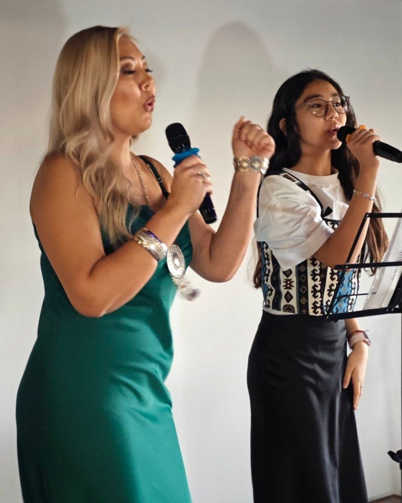

Доступная пошаговая система роста и развития
ДоСи создана не из теории — она выросла из многолетней практики студии ArJai, через которую прошли более 5000 учеников от 3 до 73 лет.
- Авторская программа обученияПуть ученика от первого занятия до результата
- МетодикаКак работать с разными уровнями, возрастами и запросами
- СтруктураПонятный путь от начала до результата — шаг за шагом
- РезультатВидимый и предсказуемый результат обучения
Три пути в ДоСи
Для педагогов, которые работают в школе или студии, для тех, кто ведёт своих учеников сам, и для владельцев школ и студий.
Педагогам музыкальных школ и студий
Понятная система урока, методика для учеников разного уровня и инструменты, чтобы родители видели результат.
Самозанятым педагогам и репетиторам
Курс «Успешный репетитор ДоСи»: как превратить знания в систему, которая приводит учеников и увеличивает доход.
О курсеВладельцам школ и студий
Единый стандарт качества для всех педагогов: диагностика, обучение, внедрение, контроль и оценка результата.
Для владельцевЕсли вы педагог
- Ученики приходят и уходят
- Сложно объяснять материал разным детям
- Нет единой системы уроков
- Сложно показывать родителям результат
- Хочется больше учеников и дохода
- Хочется стать сильнее как специалист
Если вы владелец школы или студии
- Педагоги работают каждый по-своему — нет единого стандарта качества
- Родители не всегда видят результат
- Высокая текучесть учеников
- Сложно контролировать качество обучения педагогов
Для каждой задачи у ДоСи есть своё решение.
Что меняет система ДоСи
Не «ещё одна методичка», а рабочая система, которую сразу применяете на уроках.

Что входит в обучение
Группой или индивидуально, онлайн или очно в Алматы.
Диагностика
Как понять ученика и его задачу.
Система обучения
Как выстроить путь от первого занятия до результата.
Методика
Как работать с разными уровнями, возрастами и запросами.
Профессиональный репетитор
Как превратить знания в востребованную профессиональную услугу.
Все пособия Сауле — вам
- Наглядные пособия
- Репертуарные материалы
- Алгоритмы
- Инструменты
Как проходит обучение
- Оставляете заявку
- Проходите диагностику
- Определяем ваш уровень и задачу
- Выбираете формат обучения
- Проходите программу
- Применяете систему на практике
- Получаете результат и подтверждение обучения
Сауле рассказывает о ДоСи
Видео с YouTube-канала студии ArJai. новые видео Сауле: о себе и почему ДоСи, о системе и вокале, о фортепиано


Цена зависит от формата
Онлайн или очно, в группе или индивидуально. Напишите нам — пришлём программу и подберём формат под ваш опыт и задачи.
- Обучение ДоСи для педагогов в исходниках две цены: от 25 000 ₸ и 45 000–70 000 ₸по запросу
- Курс «Успешный репетитор ДоСи»по запросу
- ДоСи для владельцев школ и студий цена B2Bпосле консультации
Скачать лист-знакомства (Word)Хотите рассказать о себе подробнее? Заполните лист и отправьте на d.sulya@mail.ru
Хотите услышать систему? Сыграйте гамму ДоСи
Вопросы о ДоСи
Подойдёт ли ДоСи начинающему преподавателю?
Да. Система даёт понятную логику урока и инструменты с первых занятий.
А опытному педагогу?
Да. Она помогает систематизировать опыт и вырасти в доходе.
Нужно ли музыкальное образование?
Расскажите о своём опыте в анкете — на диагностике подберём подходящий формат.
Входят ли материалы в обучение?
Да. Сауле передаёт педагогам все свои пособия: наглядные и репертуарные материалы, алгоритмы и инструменты.
Можно ли учиться из другого города или страны?
Да, обучение проходит и онлайн.
Выдаётся ли сертификат?
По курсу «Успешный репетитор ДоСи» — да. условия выдачи сертификата
Можно ли внедрить ДоСи в музыкальную школу?
Да, для владельцев школ и студий есть отдельное направление. Подробнее для владельцев
Оставить заявку
Пройдите анкету — ответы сразу придут нам в WhatsApp, и мы пригласим вас на бесплатную диагностику.
d.sulya@mail.ru
Алматы — очно, весь мир — онлайн. адрес студии и 2ГИС